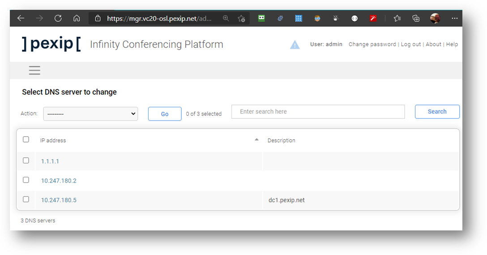
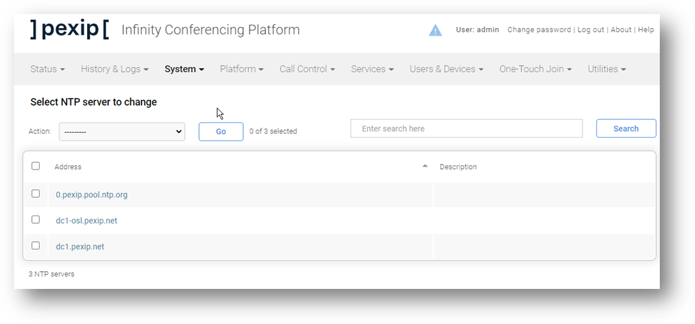
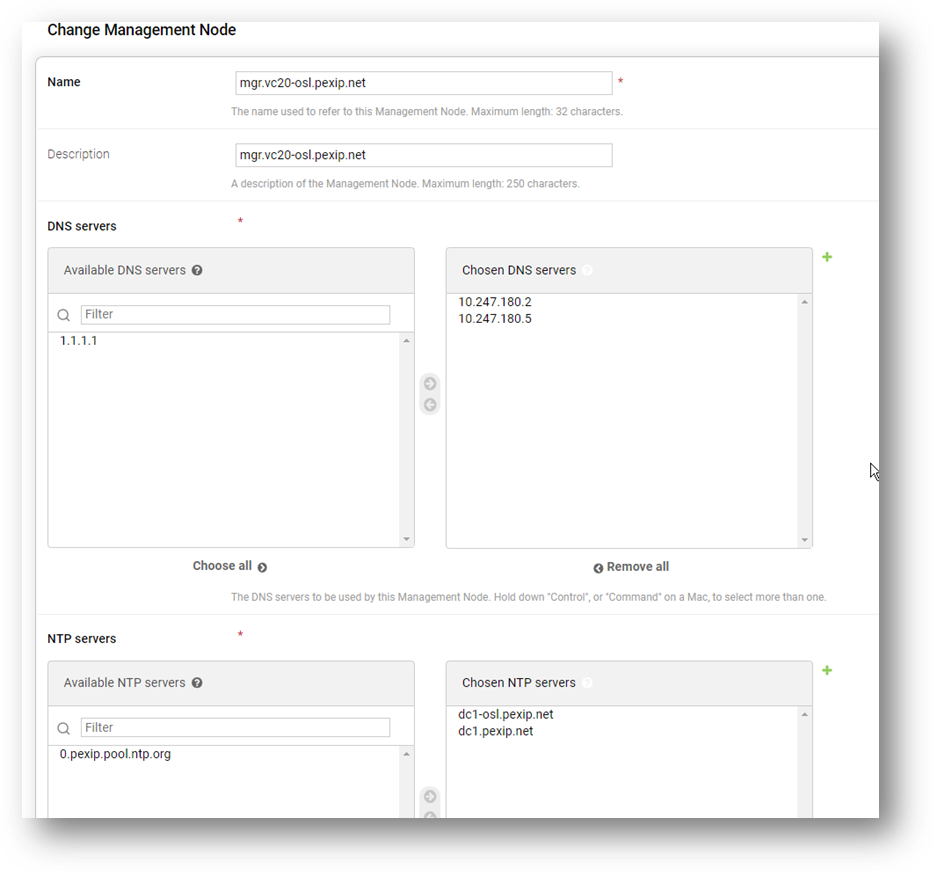
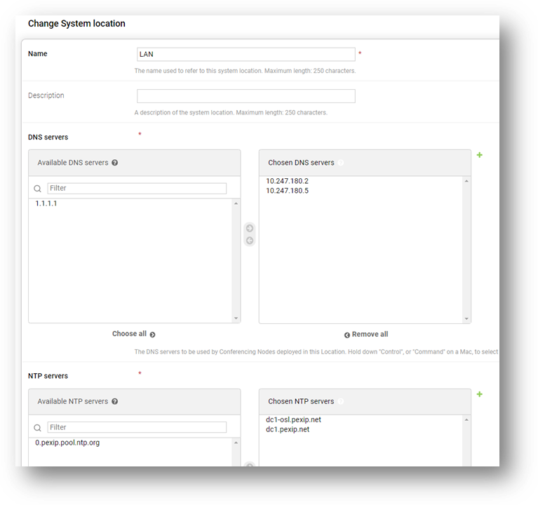
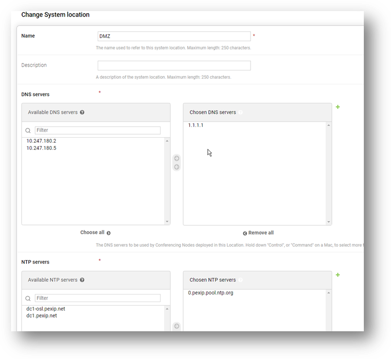

Suggested completion time: 15 minutes
Use section #4.1 and section #5 of the lab sheet.
- Browse to the Management Node URL using its DNS name or IP address (accept the security warning, we will fix
this later).
- Log in with username admin and the Pexip123 password.
- Go to Platform --> Locations and create a System Location for the
internal nodes, as per section #4.1
- Configure DNS and NTP Servers as per section #4.1. If you need to add additional servers,
click the green plus to add this configuration on the fly.
- You will need to grab a screenshot of all the DNS and NTP settings (see Screenshot 1).
- Most other settings can be left as defaults. Note that the Transcoding Location is set to This location. Also note that this is where you would configure DSCP (QoS) settings and MTU size, meaning that all nodes within this location will inherit these settings.
- Save.
- Repeat to create another System Location for the edge nodes (see section #5) and keep Transcoding Location: This Location (Note: Yes, this is initially going to be a Transcoding location!! We will change this later. Add public DNS and NTP Servers (Note: look for the green add button by the side of property boxes that allow you to add configurations on the fly. You can also navigate to System --> DNS Servers and add servers there).
- Save.
Screenshot 1: Demonstrate your working Pexip Infinity deployment
On the Pexip Academy portal, you will find this exercise. You will use the document within the question and
gather screenshots of different views of your deployment and configuration pages as you work through the labs.
You will be working in groups and only need to upload one document per group.
Gather some screenshots showing your DNS and NTP configurations from the Systems menu, and how
you have applied them to the Management Node and Locations via the Platform menu.
Screenshot of ALL the DNS servers configured on the system:

Screenshot of ALL the NTP servers configured on the system:

Screenshot of the DNS and NTP servers applied to the Management node:

Screenshot of the DNS and NTP servers applied to the LAN location:

Screenshot of the DNS and NTP servers applied to the DMZ location:
